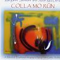

Celtic Lyrics Corner > Artists & Groups > Margaret Stewart > Colla Mo Rùn > Tha Sinn A' Falbh
|  | Tha Sinn A' Falbh |
| Credits : | Traditional; arranged by Margaret Stewart & Allan MacDonald |
| Appears On : | Colla Mo Rùn |
| Language : | Gàidhlig (Scottish Gaelic) |
| Lyrics : | English Translation : |
| Sèist : | Chorus (after each verse) : |
| Tha sinn a' falbh, 's gum bith sinn a' falbh | We are going, we'll soon be going |
| 'S an t-Sealbh a bhith ghar còmhnadh | Let fortitude be with us |
| Nuair thig an t-sìth a null on Fhraing | When peace comes from France |
| Gun taing gu faigh sinn fòrladh | Without thanks, we'll get leave |
| 'S bòidheach leam a' dol san ruaig sibh | Beautiful to me you going to the affray |
| 'S buaidheach leam 'ur còmhdach | And handsome to me your attire |
| Boineid ghorm is ite peucaig | A blue bonnet and a peacock's feather |
| 'S trom mo cheum on sheòl sinn | And heavy is my step since we sailed |
| 'S iomadh màthair tha gun mhac | Numerous are the mothers without sons |
| Is piuthar tha gun bhràthair | And sisters without brothers |
| Is nigheanag òg a tha gun leannan | And young maidens without a sweetheart |
| On sheòl sinn thar sàile | Since we sailed over the sea |
| 'S tha na h-ighneagan fo mhulad | The young girls are dejected |
| 'S tha iad uile brònach | And they are all grieved |
| An liuthad saighdear bòidheach dearg | The numerous handsome soldiers in red |
| A dh'fhalbh a dh'arm Righ Seòras | Who went in the service of King George |
| 'S fhir as coireach bhith ghar togail | And you, the man, responsible for bringing us up |
| 'S bhith ghar cur an òrdugh | And for keeping us in order |
| Nar fhada gum bi claidheamh cruadhach | That soon a hard sword steel |
| Suas ri meall do sgòrnain | Will be up against your protruding gullet |